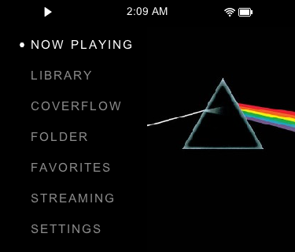
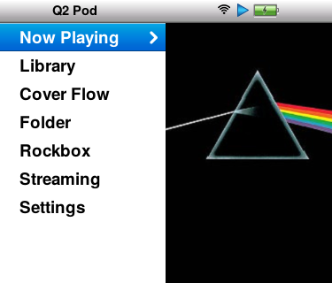
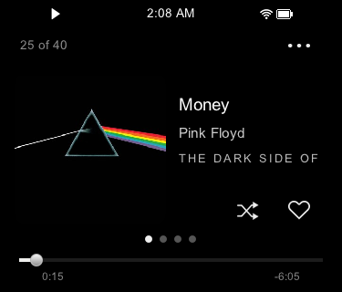
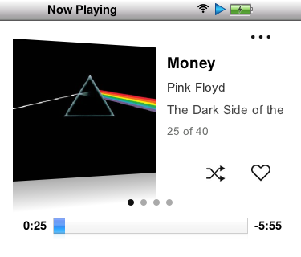

Q2 Pod gives the Shanling Q2 the iPod classic experience. This chapter shows the controls and how to find your music.
Q2 Pod operates on Shanling’s firmware. If Q2 Pod is new to you, read Start here: play your first song in Chapter 2 first.
These are the controls on the Q2:
Six controls do almost all tasks: the wheel, Centre, Return, Play/Pause, Next and Previous.
| To | Do this |
|---|---|
| Start the Q2 | Push Centre. |
| Shut down the Q2 | Hold Centre, then select Shut Down |
| Put the Q2 to sleep (screen off) | Push Centre two times quickly. On Now Playing, push it one time. The music continues. |
| Stop sleep | Push Centre. |
| Scroll a list | Turn the wheel. Each tick moves one row. Turn more quickly to move more rows. |
| Select the highlighted item | Push Centre. |
| Go back | Push Return. |
| Play or pause | Push Play/Pause, on all pages. |
| Go to the next or previous song | Push Next or Previous. After 10 s of a song, Previous goes to its start. |
| Move forward or back in a song, screen off | Hold Next or Previous while a song plays. Release it to play from that point. |
| Change the volume | Turn the wheel when no list shows. |
| Go to Now Playing | Hold Return, on all pages. Hold it again to go back. |
| See the options for a song, album or playlist | Hold Play/Pause on it. |
| Open quick settings | Pull down from the top edge of the screen. |
The Centre button has different functions on different screens:
| Screen | Push | Push two times | Hold |
|---|---|---|---|
| Menus and lists | Opens the highlighted item | Puts the Q2 to sleep | Shuts down the Q2 |
| Now Playing | Puts the Q2 to sleep | Starts the scrub (Now Playing) | Shuts down the Q2 |
With Single Press Scrub on (Controls), one push on Now Playing starts the scrub. Two pushes put the Q2 to sleep, as on other pages.
Sleep and shutdown: In sleep, the screen is off and the music continues. Shutdown stops the Q2. With Standby Limit, a Q2 in sleep can shut down after a time (Power and battery).
If the Q2 does not start, or the screen stays black and no button operates:
These shortcuts save time.
| To | Do this |
|---|---|
| Go back from Now Playing | After a hold of Return, push Return or hold it again. With Hold Return: Home, a hold goes to Home from all other pages. |
| Song options | Hold Play/Pause on a song. You can queue it, add it to a playlist or your favourites, or go to its album, artist or folder. Now Playing also lets you rate it. |
| Album, artist, genre or folder options | Hold Play/Pause on it to queue it, shuffle it or add it to a playlist. You can also rate an album, or add it to your favourites. |
| Search your songs | In Library, pull the list down until “Release to search” shows, then type. In the Classic theme, select Search, the first row. |
| Go to a point in a song | On Now Playing, push Centre two times, then turn the wheel. Each tick is 5 s, up to 40 s in a fast turn (Now Playing). |
| Show lyrics full screen | Tap the lyrics. To go back, tap again or push Return. |
| Open the Cover Flow settings | Hold Play/Pause on the Cover Flow row of Home. |
| Open the EQ | In quick settings, hold Playback. |
| Stop a wheel that continues after you lift | Push Return two times quickly. |

Home (Minimal theme)
Home (Classic theme)Home shows Now Playing (while a song is loaded), Library, Cover Flow, Folder, a shortcut, Streaming and Settings, adjacent to the current song’s cover. The list goes around at the two ends. On Home, push Return one time to select Now Playing. Push it again to open Now Playing. Playback does not change.
The bar at the top shows the play state, EQ, the time, Bluetooth, Wi-Fi and the battery. When headphones connect, it shows the Bluetooth codec (AAC, LDAC…) for a short time.
The Q2 opens on Home. With Memory Playback → Location, your queue comes back, but it does not play. With Track, the song plays from its start, but a podcast or audiobook continues from its position. In-Vehicle Mode starts playback. If Require Output (Beta) is on and no output is connected, the queue comes back but does not play.
Pull down from the top edge of the screen. The wheel sets the brightness, or the volume after a hold of Play/Pause (the Q2 keeps your selection). Tap Wi-Fi or Bluetooth to set it on or off, or hold its icon for its settings. Hold Playback to open the EQ. Output Options sets the headphone jack to Line Out, for an amplifier or powered speakers. Line Out sets the volume to maximum, thus the Q2 shows a prompt first: tap it again before you connect headphones.
With Q2 Pod, you can:
Install Q2 Pod, copy your music to the card and play your first album, in approximately ten minutes.
Do these steps in this sequence. The links give more data.
Necessary items: a Shanling Q2 with a microSD card, a USB-C cable and a computer with internet.
Caution: Charge the Q2 first. Put in or remove the card only when the Q2 is fully shut down, not in sleep. If not, damage to the card can occur.
To install Q2 Pod:
update.tar from the latest release at github.com/DiamondBond/q2-pod/releases/latest.update.tar to the card’s root, not into a folder. Then eject the card and disconnect the Q2.Network update cannot move the Legacy build to this build. The steps above can.
To add music:
To copy through Wi-Fi, select System settings → Network → Wi-Fi File Transfer. Open the address that it shows in a browser. Upload Folder keeps your folders.
The Library shows all the songs that the scan finds. The Q2 keeps settings, ratings, play counts and resume points in its own memory. They stay when you change the card.
Select Library → Update Library → Scan specified folders. Tick the folders that you copied to, then select Scan. To tick the folders in a folder such as Music, open it. Ticks stay when you move between folders. If you tick a full folder, the scan reads all its songs again, as a full update does.
Shanling rates the Q2 for 20,000 songs. Q2 Pod can scan more, but a much larger library is slower and possibly does not operate correctly. The scan can stay at No.0 for a long time while it reads the folders. Let it continue, or push Return to stop it. On a very large card, Songs, Albums and Artists possibly do not show all songs. Folder can play all files.
To remove a folder from Songs, Albums, Artists, Cover Flow and library shuffle, put an empty file with the name database.ignore in it. Then start Update Library. Its songs can play from Folder and playlists. An empty database.unignore adds a subfolder again. The two names can start with a dot, which hides the file from other players.
The Library uses your tags. Correct them on a computer (Mp3tag, MusicBrainz Picard or foobar2000), then start Update Library and Refresh Cover Flow (Cover Flow settings).
CD1, Disc 2) count as one album. Two albums with the same name in one folder become one: give each its own folder or an Album Artist.Put these folders at the card’s root, with capital letters or not. Each adds its Library row. The Q2 ignores other names, such as Images/.
| Path | What it is | Made by |
|---|---|---|
Podcasts/, Audiobooks/ | A folder for each show or book. Files continue where you stopped and are not plays | You |
Photos/ | .jpg, .jpeg, .png (JPEG 6 MB maximum, PNG 1 MB). Subfolders are albums | You |
EQ/ | AutoEQ and Equalizer APO presets to import | You |
Radio/ | Internet Radio playlists, .m3u and .pls | Both |
lockscreenimage/ | A maximum of 5 lock screen images | You |
_explaylist_data/ | M3U playlists to import, and playlist pictures | Both |
database.ignore | Hides a folder from the Library lists (Add music) | You |
.scrobble.ini | Scrobble accounts (Last.fm and ListenBrainz) | You |
.scrobbler.log, .sent | All your listens, in Rockbox format, and those uploaded | Q2 Pod |
.ratings.tsv | A copy of your ratings, to read on a computer | Q2 Pod |
.coverflow/ | Cover Flow artwork, and playlist pictures | Q2 Pod |
.photos/ | Photo thumbnails | Q2 Pod |
.sldp/ | The Shanling cover cache | Stock |
.spotify/ | The Spotify add-on. cache/ keeps your login and downloads | You |
.tidal/ | Tidal songs you downloaded or played, to play offline | Q2 Pod |
For free space, remove .coverflow/ and .photos/: Q2 Pod makes them again. Cover Flow and Photos must have 16 MB free. Do not remove .spotify/cache/ or .tidal/: this signs you out or removes offline songs. Set their size in Streaming Configuration.
Find music in your library, see the current song, read the lyrics, or look through your albums by cover.
Select Library on Home, then a list. Push Centre on a song to play it and the songs after it in the list.
| Library row | What it shows |
|---|---|
| Artists | Each artist opens on their albums, with Songs one tap away |
| Albums, Songs, Genres | Your full library, A to Z |
| Era | Each decade with dated albums, oldest first (below) |
| Long Songs | Songs longer than 10 minutes, longest first (below) |
| Playlists, Ratings | See Chapter 4 |
| Recently Added, Recent, Most Played, Hi-Res | Your newest songs, the songs you played recently, your 100 most played, and hi-res files |
| Shuffle | Shuffles the full library (Shuffle the library) |
| Podcasts, Audiobooks, Photos | Show when the card has these folders (Chapter 7) |
| Apps | Installed apps that open here, after you install one |
| Games | Sudoku, Vortex, Solitaire, Snake and your installed games |
| App Store, Upload Scrobbles, Update Library | See Install apps, Last.fm and ListenBrainz and Add music |
Pull the Library list down until “Release to search” shows, then type. In the Classic theme, select Search, the first row. Search finds songs, artists, albums and genres. In Cover Flow, turn quickly to go one letter at a time.
Library → Era shows each decade with dated albums, and their number. A decade opens Play All (its albums by year), Shuffle and its albums. Centre on an album shows it in Cover Flow. An album’s year is its latest Year tag. Undated albums do not show.
Library → Long Songs shows songs longer than 10 minutes, with their length. The first time, it measures songs without a length (“Measuring songs… n/N”). Cancel keeps the lengths. With Scan Song Durations on (Cover Flow settings), it measures the remaining songs in the background.
Folder on Home shows the card as it is. Return goes up one level, and from the card’s root to Home. With Folder Root (Library & Folders), it opens a folder that you select.
Cover Flow shows your albums as covers. Start Update Library first. The first time, it prepares the artwork. Cancel keeps the completed part. After that, it adds only new albums, and tries again the albums that it could not complete.
| To | Do this |
|---|---|
| Browse | Turn the wheel, or swipe: the covers follow your finger and continue after a flick. Touch them to stop. |
| Move a cover to the middle | Tap it. |
| See an album’s songs | Push Centre, or tap the middle cover. |
| Move quickly | Turn quickly. The speed increases to 20 albums a second, and the Album and Artist sorts go by first letter, shown large. Turn slowly to go album by album. |
| Rate, queue or add an album to favourites | Hold Play/Pause on it. You can also go to the album’s artist. |
cover or folder image (.jpg, .png or .webp) in the album folder, or a grey disc. The Q2 does not use the image of a folder with more than one album..m4b files, or albums in Audiobooks/.
Minimal
ClassicNow Playing shows the song’s position in the queue (“25 of 40”), its cover and data, the play mode and heart buttons, and a progress bar. In Classic, the cover is at an angle above its reflection, as on an iPod classic. Tap the cover to see it full screen. Swipe for lyrics, song data and the visualizer. The dots show the current page.
| To | Do this |
|---|---|
| See the song options | Hold Play/Pause: queue, rate, favourites, playlists, shuffle and repeat. |
| Rate the song, or add it to favourites | Hold the heart, turn to 0–5 hearts, then push Centre. A tap adds it to favourites. |
| Go to a point in the song | Push Centre two times, then turn: 5 s a tick, up to 40 s in a fast turn. To go there, push Centre two times, push Return, touch the screen or wait 3 s. A paused song stays paused. |
| Change the playback speed | Use the speed control. It applies to all files in that folder, not its subfolders, from all lists. The Q2 keeps it until you set the usual speed. |
| Put the Q2 to sleep, or go back | Push Centre one time for sleep. If you came with a hold of Return, hold it again to go back. |
For synced lyrics, put the song’s .lrc file in its folder. Embedded lyrics possibly do not show. On Wi-Fi, you can also open ⋯ on Now Playing. Download Cover & Lyrics finds them for the current song, and Download Album Lyrics adds its album’s missing lyrics.
Swipe Now Playing to its fourth page for Spectrum, Oscilloscope, VU Meters, Halo, Pulsar or Contour. Tap to change it. The Q2 keeps your selection. It shows the sound with the EQ.
Rate your songs, put songs into playlists, and select how your music plays.
Each song and album can have 0 to 5 hearts. Five hearts is a favourite: Add to Favourites gives five hearts, and a rating of five adds a favourite.
| To | Do this |
|---|---|
| Rate a song | On Now Playing, hold the heart, or hold Play/Pause and select Rate. Turn the wheel, then push Centre to save or Return to cancel. Or tap a heart. Tap the current one to clear it. |
| Add a song to favourites, or remove it | Tap the heart on Now Playing. A song with a rating of 1 to 4 shows its number on the empty heart. |
| Rate an album | Hold Play/Pause on it in Cover Flow, Albums or an artist’s albums, then select Rate Album. Add to Favourites gives it five hearts and adds all its songs to favourites. Remove from Favourites cancels the two. |
.ratings.tsv, to read on a computer. Edits to it do not change the Q2.In Library → Playlists, New Playlist makes a playlist. To add songs, hold Play/Pause on a song, album or artist, then add it to a playlist. A playlist’s More menu (its three dots, or hold Play/Pause and select More…) has Rename, Delete Playlist and Edit Playlist.
When you edit a playlist:
| To | Do this |
|---|---|
| Select a song | Turn the wheel. |
| Move it | Push Previous to move it up, Next to move it down. Centre also gives Move Up and Move Down. |
| Remove it | Push Centre, then select Remove from Playlist. The Q2 shows a prompt first. |
| Add songs | Add Songs opens a picker. Its Search row finds songs by title, artist or album, and stays open while you add songs. It shows the first 500 songs, A to Z. If more songs match, its last row, Search for more songs, also opens the search. |
| Close the editor | Select Done, or push Return. The Q2 saves each edit immediately. You cannot undo an edit. |
Changes apply the next time that the playlist loads. The current queue keeps its sequence. You can edit only local playlists.
In the Classic theme, New Playlist… and Select Playlists… are at the top of the list. In Select Playlists, Centre marks a playlist, and again clears it. Select All marks all playlists. Export or Delete acts on the marked playlists (Delete shows a prompt first). Import Playlists imports, and Done or Return closes the page.
In Classic with Row Art on, and in Playlist View: Cover Flow, each playlist shows a picture. For your own, put a .jpg or .png named for the playlist (Road Trip.jpg), 12 megapixels maximum, in the card’s _explaylist_data folder. Write _ for each \ / : * ? " < > |. The Q2 ignores a larger picture. If there is none, it shows the first four album covers of its songs, in the sequence added, again and again when there are less. Pictures show as the list opens. Refresh Cover Flow makes them all again.
With Playlist View: Cover Flow (Cover Flow settings), Playlists opens as covers, with the name and song count below the middle cover. Centre opens a playlist. Hold Play/Pause on a cover for its queue and More options, New Playlist and, in Classic, Select Playlists…. A song played from a cover has no Delete in the More menu of Now Playing, because Delete removes the song from your library.
The Q2 imports .m3u playlists only from the _explaylist_data folder at the card’s root. To make this folder, export a playlist one time, or make it manually.
To import playlists:
.m3u files into _explaylist_data.A:\Music\Artist\Album\01 Song.m4a, as iTunes exporters write them, or /mnt/mmc/Music/….#EXT, such as #EXTM3U and #EXTINF. Other lines that start with # show as broken songs. Remove them..m3u files from Folder, in all folders. They play without import, but you cannot edit them. The Q2 keeps an imported playlist, thus you can remove its file after the import.Library → Shuffle shuffles all songs, but not audiobooks, podcasts or hidden folders:
| Select | What plays |
|---|---|
| Shuffle Songs | All songs one time, in a shuffled sequence. When all songs have played, it shuffles again and continues. |
| Shuffle Albums | All albums one time, in a shuffled sequence, each in disc and track sequence. Then it stops. |
| Shuffle Folders | The same by folder, each in path sequence. |
On Now Playing, hold Play/Pause and select View Queue to see the next songs: a maximum of 500 with shuffle. To play a song there next, hold Play/Pause on it. The same menu sets Shuffle, Repeat and Group by: Album / Folder. Changes do not move the current song.
| Shuffle | How the queue plays |
|---|---|
| Off | Albums in the sequence that they first show, each in sequence |
| All Songs | All songs in one shuffled sequence |
| Songs in Album | Albums in sequence, the songs of each shuffled |
| Albums | Albums shuffled, each in sequence |
| Albums and Songs | Albums shuffled, and the songs of each shuffled |
| Repeat | What occurs at the end |
|---|---|
| Play One Song | Stops after the song |
| Play One Album | Stops after the album |
| Play All | Stops after the queue |
| Repeat Song, Album or All | Plays the song, album or queue again |
Change the sound with three sliders or 30 bands, load a preset for your headphones, and select how one song goes into the next.
Select Playback → EQ, or hold Playback in quick settings. The EQ opens on Simple. Advanced is the other tab. Tap a tab, or turn the wheel above the top row and push Centre. One EQ plays at a time, Simple or Advanced, and each keeps its settings. The status bar shows EQ while an EQ is on (not in the Classic theme).
A tone control, as in the Apple AirPods EQ: Low, Mid and High, each −6 to +6 dB in 0.5 dB steps. Boosts get an equal preamp cut, thus loud settings do not clip.
| To | Do this |
|---|---|
| Set a slider | Turn to it, push Centre, turn, then push Centre or Return. Or move it with your finger. |
| Set Simple on or off | Select Enabled. On sets Advanced off. The Q2 keeps edits made while Simple is off. While the page is open, Off keeps the headroom cut, thus the sound is not suddenly louder when you compare. |
| Use a stock preset | Select Presets (Pop, Rock, Jazz and others). It plays immediately in Advanced, and the sliders become dim. Move a slider to go back to Simple. |
| Reset | Select R: the three sliders go to 0 dB. |
A parametric EQ with a live curve. Its ten default bands (31 Hz to 16 kHz) operate as a graphic EQ: set a gain and the band comes on.
| Row | What it does |
|---|---|
| Curve | The response, shown as you edit, with a ring on each band. Move a band up or down with your finger to set its gain. |
| Bands | Peaking, Low shelf or High shelf, with frequency, gain (−24 to +24 dB), Q, on/off and channel (both, L or R). Tap a frequency or Q to type it, or change it with Raise and Lower. |
| Preamp | Auto cuts sufficiently for the boosts at the current sample rate, shown as, for example, Auto (44.1: -9.2 / 48: -8.8). It is not a limiter. Or select +12 to −24 dB: this is the same at all rates, and can clip with large boosts. |
| Balance | L 12.0 dB to R 12.0 dB in 0.5 dB steps. R 1.0 dB decreases the left by 1 dB. |
| Presets | Stock presets loads the Shanling curves into the ten bands. Import from SD /EQ loads AutoEQ files (below). Rename a preset renames a saved preset. Return keeps the previous name. Save editor preset saves the bands as Manual 01–10. Delete a preset removes one. |
| Apply changes | Edits and presets play only after you select this. |
| Enabled | Sets Advanced on or off immediately. On sets Simple off. |
| Reset to defaults | Asks first, then sets the bands, preamp and balance flat. Select Apply changes to hear it. Enabled and saved presets do not change. |
| EQ per Output | Each output keeps its own EQ (below). |
To use an AutoEQ or Equalizer APO preset for your headphones:
.txt file to the EQ folder at the card’s root. The Q2 reads Channel: L, R and all sections.With EQ per Output on, the 3.5 mm jack, the 4.4 mm jack, USB and each Bluetooth device keep their own EQ, Simple or Advanced. It is off by default.
In Playback:
| Setting | What it does |
|---|---|
| Gapless | Plays albums without gaps. The Q2 removes encoder padding from MP3 (with a gapless tag), AAC in M4A, Opus and Vorbis. Gaps that are part of the music stay. Keep it on. It stays on while Crossfade is on: to set it off, set Crossfade off first. |
| Crossfade | Fades one song into the next, 1–15 s (5 s by default). Turn fully down for Off. Centre sets it on or off. It fades only between different albums, thus albums stay gapless. On sets Gapless on, because a fade must have it. Off by default. |
| Memory Playback | At start-up, brings your queue back, paused: Track at the start of the song, Location where you stopped. |
| Resume Songs | Songs of this length or longer continue where you stopped, as podcasts do: 20 to 120 minutes, 30 by default, or Off. |
| Max Volume | Limits the volume: turn the wheel to set it, then push Centre. The volume bar shows a triangle at the limit. |
| Mono Audio | Mixes the channels for each ear. DSD and AirPlay stay stereo. |
| Swap L/R | Swaps the left and right channels. DSD and AirPlay do not change. For Spotify on the jack, pause and play after the change. |
| Require Output (Beta) | Plays only to headphones, Bluetooth, a USB DAC or AirPlay. Off by default. If headphones do not play, set it off and on. |
| Digital Filters | The Shanling DAC filter. |
| Shanling’s own | Gain, ReplayGain, Default Volume, Channel Balance, Enlarged Album Art, DSD Output Mode and USB Audio Output, as in the Q2 manual. |
Library & Folders, also in Playback, is in Chapter 9.
Play Spotify, Internet Radio and AirPlay through Wi-Fi, and send your listens to Last.fm.
These are all in Streaming on Home. A stream plays on the output in use when it starts: the headphone jack, Bluetooth or a USB DAC. It continues with the screen off. Until you play local music again, the playback buttons control the stream from all pages.
TIDAL is Shanling’s. In Tidal Downloads, Download Playing Songs saves the current album or playlist in the background, without saved songs. Push again to stop. Saved songs play offline, in the Tidal Cache size (Streaming Configuration). Clear All Downloads… removes them.
Browse and play Spotify on the Q2: Liked Songs, your playlists, saved albums and artists, Search and downloads. You must have Spotify Premium and an add-on on the card. The Q2 is also a Spotify Connect speaker that your phone can control.
If playback does not start on your account (Spotify refused this account), see issue #98 (github.com/DiamondBond/q2-pod/issues/98).
To install Spotify:
q2-librespot-*.zip from github.com/DiamondBond/q2-librespot/releases/latest. Unzip it to the card’s root, to make a .spotify folder. (On a Mac, Cmd+Shift+. shows hidden folders.)To pair it, one time:
To update, unzip a newer release on top of it. Your login stays. To browse, use q2-librespot 1.3 or newer, and 1.10 for Downloaded Playlists. To remove Spotify, delete .spotify.
After each start of the Q2, open Streaming → Spotify one time to show the Q2 in Spotify again. To keep battery charge, Spotify stops 30 seconds after a pause when you are out of its menu, or after 2½ minutes if nothing played. Open it again to start it. A song from your library pauses Spotify. A cast from the phone stops your own music.
For Bluetooth and USB output, you must have a current .spotify/aplay.sh. With a previous version, Spotify plays on the headphone jack. An add-on version that cannot browse can play from the phone, and tells you to update it.
Download Playlist (or hold Play/Pause on a playlist) and Download Liked Songs save a collection, in sequence, to play without Wi-Fi. They are in Downloads: Downloaded Playlists, Downloaded Tracks, Download Progress and Storage Management.
Play stations from the radio-browser.info directory, or your own stations.
Radio folder.| To | Do this |
|---|---|
| Play a station | Push Centre on it. |
| Save it to Favourites, or remove it | Hold Play/Pause on it or on its Now Playing, or tap the heart. |
| Stop or start it | Push Play/Pause, on all pages. |
| Change the station | Push Next or Previous for the next station in the same list. |
Now Playing shows the station, the song if the station sends it, the format and the bitrate. A stream that stops connects again. After five tries, it shows Can’t play this station. If it shows Can’t play: with a cause, put that in a bug report. The Q2 has no FM tuner.
Put .m3u or .pls files in the card’s Radio folder. They show in Favourites. An .m3u file has a name line, then the address:
#EXTM3U #EXTINF:-1,Radio Paradise http://stream.radioparadise.com/mp3-128
Streaming → AirPlay opens Network. Set the AirPlay receiver to on there, then select the Q2 in your iPhone’s AirPlay menu. It is AirPlay 1: audio from one device, with Apple Music, but not AirPlay 2 multiroom.
To play the Q2 music on AirPlay speakers, install AirPlay from the App Store. Then select AirPlay at the top of ⋯ on Now Playing.
In Streaming → Configuration:
| Row | What it does |
|---|---|
| Tidal Cache, Spotify Cache | Card space for each service: 512 MB to 8 GB, 2 GB by default. Push to change. Tidal removes its oldest songs after the next download. Spotify applies it when it next starts. |
| Erase Spotify Data | Push two times to erase the Spotify login, cache and logs (they show your account and songs). Spotify Cache goes back to 2 GB. |
| Stop Streaming Services | Stops Spotify, Internet Radio, Tidal (also a Tidal download) and card apps immediately. Use it if your own music does not play correctly after a stream. To start Spotify again, open it. |
| The services | A switch for each service: Off hides it from Streaming. |
The Q2 records each listen on the card. To upload them, save a plain-text file named .scrobble.ini (with the dot, no .txt) at the card’s root, with the section for your service below, or the two sections. Do not add a service that you do not use: a placeholder counts as an account, and its failures stop all uploads.
[LASTFM] USER=q2listener PASSWORD=ExamplePassword123 API_KEY=0123456789abcdef0123456789abcdef API_SECRET=fedcba9876543210fedcba9876543210
Your Last.fm username and password, and your own API key and secret from last.fm/api/account/create (with an application name of your selection).
[LISTENBRAINZ] TOKEN=12345678-1234-1234-1234-123456789abc
Copy your user token from listenbrainz.org/settings.
To upload your listens:
The Q2 records a song after you play half of it or four minutes, the shorter of the two. If Connect to Wi-Fi first shows after Upload Scrobbles, the Q2 is not online.
Add these lines, as necessary, below a [SCROBBLE] section in the same file:
| Line | What it does |
|---|---|
AUTO=1 | Uploads automatically while on Wi-Fi: one listen in less than approximately three hours. More listens upload sooner, to a minimum of one hour. It does not set Wi-Fi on. |
ALBUM_ARTIST=1 | Scrobbles the Album Artist, not the Artist, (“Artist feat. Guest”). Songs without an Album Artist use the Artist. |
PERCENT=50 | Scrobbles a song after you hear that percentage of it, 1 to 100. Most Played counts as usual. |
Put the card in a computer with Python 3.9 or newer. Download lastfm_key.py from github.com/DiamondBond/q2-pod/raw/main/tools/lastfm_key.py and use this command:
python3 lastfm_key.py /path/to/card/.scrobble.ini
(On Windows, use py, not python3.) It signs in one time and replaces PASSWORD with a SESSION_KEY. Without a PASSWORD line, it shows a password prompt. The key cannot sign in or change your password, but it can scrobble and edit your profile. If somebody gets your card, revoke the application in Settings → Applications on last.fm. Somebody can possibly read a password that was on the card before, thus change it if this is important.
Caution: Keep the card safe. .scrobble.ini contains your credentials in plain text.
Add a folder to the card and the Q2 adds it to the Library: spoken word that continues where you stopped, photos and games.
Put one folder for each show or book in Podcasts or Audiobooks at the card’s root.
.m4b files without DRM play as they are: copy them, without a new name or a conversion. An .m4b continues where you stopped in all folders on the card, and does not count for Most Played or scrobbles. The Audiobooks folder is optional for them.
On Now Playing, hold Play/Pause and select Chapters, for all .m4b files and for files with chapters in Podcasts or Audiobooks. The list opens on the current chapter. Centre goes to the start of a chapter, and a pause stays. Chapters without titles show as “Chapter N”, and books without chapters show “No embedded chapters”. On one track of an .m4b with a CUE sheet, the list shows that track’s chapters.
A book that a .cue sheet divides into chapters keeps one position for the full book. A chapter that you select plays from its start, and becomes your position after 30 seconds. To continue, open the book’s chapters, hold Play/Pause on a chapter and select Resume. Music albums with a CUE sheet do not continue where you stopped.
Put photos in Photos at the card’s root (formats). Its subfolders are albums.
| Screen | Wheel | Centre | Other |
|---|---|---|---|
| Photo | Previous or next photo | Shows or hides “3 of 40” and the name | Return goes back |
The Q2 skips other photo formats, such as WebP.
Videos is an app. Install it from Library → App Store (Install apps), then open it from Library → Apps. It plays the videos in the card’s Videos folder.
Books is also an app. Install it from Library → App Store, then open it from Library → Apps. It reads the books in the card’s Books folder. As a game does, it closes after two minutes without a touch. To stay on a page longer, set Smart Awake to on (Display).
Library → Games has Sudoku, Vortex, Solitaire and Snake. The music continues. The Q2 keeps open games and Vortex’s and Snake’s best scores, also through shutdown.
| Game | Wheel | Centre | Other keys |
|---|---|---|---|
| Sudoku | Moves through the cells, or selects the digit | Opens the digit, then writes it | Previous and Next move a row. Play/Pause starts a new game. Return cancels or goes back. |
| Vortex | Turns the paddle | Sends the ball | Play/Pause pauses. Return gives Continue or Quit. |
| Solitaire | Moves between the piles | Draws, picks up, then drops cards. Two pushes on a pile send its top card home. | Previous and Next change rows. Play/Pause starts a new game. Return puts cards back or goes back. |
| Snake | Not used | Starts a new game after a crash | Previous and Next turn. Play/Pause pauses. Return gives Continue or Quit. |
Listen without wires in high quality, and control playback from your AirPods.
To pair headphones, hold Bluetooth in quick settings to open its settings. When they connect, the status bar shows the codec (AAC, LDAC…) for a short time. Music, Spotify and Internet Radio all play through Bluetooth.
| LDAC quality | Bitrate |
|---|---|
| LDAC HQ | 990 kbps (909 for 44.1 kHz music): the best sound, but it breaks up most easily |
| LDAC Standard | 660 kbps (606) |
| LDAC Connection (auto) | Changes with the connection, to a minimum of 492 and 396 kbps at 48/96 kHz. Try it if LDAC HQ breaks up |
Quality sets LDAC. Rockbox uses the last one that you selected. These three settings show while Bluetooth is on:
| Setting | What it does |
|---|---|
| Resume on Connect | Off (default): a connection does not start or stop playback. Play on the headset operates from 5 s after it connects. On: a connection starts the last song again, also if it was paused, as on the Shanling firmware. |
| Control Device Volume | Off (default): the Q2 volume and the headphone or speaker volume do not change together. This is safer for loud speakers and in-ear monitors. On: the Q2 volume sets the device volume, and the device buttons change the Q2 volume. With this, some speakers sound thin at low volume. |
| Receive Audio | On (default): a phone can play to the Q2. A speaker that can also send audio, such as an Amazon Echo, can think that the Q2 is a phone. Off: the Q2 only sends, thus it plays to such a speaker, and phones cannot play to it. After a change, set Bluetooth off and on. |
AirPods controls operate without a setting, from all pages and with the screen off.
| To | Do this |
|---|---|
| Play or pause | Push the stem one time. |
| Go to the next or previous song | Push the stem two or three times. For Internet Radio, this changes the station. |
| Pause | Remove a bud from your ear. Put it back to continue. |
Select the look of Q2 Pod, the feel of its controls, and the battery life.
The settings are in Settings → System (System settings) and Settings → Playback. Each table shows the default first. Set the clock in System settings → Date & Time: Automatic Time Set gets it from Wi-Fi, or select Set Time Manually and Time Zone Selection.
For a different language, install Languages from the App Store (Install apps) and select it in System settings → Language. The Q2 starts again in it. Remove the app for English.
In System settings → Controls:
| Setting | What it does |
|---|---|
| Wheel Sensitivity | 10–200%, 50% by default (a seventh of a turn for each tick). Higher is more sensitive. |
| Hold Return | Recent (default): a hold opens Now Playing, and a second hold goes back. Home: a hold goes to Home. |
| Single Press Scrub | Off by default. On: on Now Playing, one push starts the scrub and two pushes put the Q2 to sleep, as on other pages. |
| Key Tone | The Q2 speaker clicks for each row in a list, when no headphones, Bluetooth or USB DAC are connected. |
| Click With Headphones | Shows with Key Tone on: the speaker continues to click with headphones connected. |
| Wake | Single Press (default), or Double Press if the Q2 stops sleep in your pocket. Play/Pause and the volume operate in sleep. |
| Volume Guard | Off by default. On: with the screen off, the wheel ignores the first two thirds of a turn. Thus a light touch does not change the volume. Then it moves as usual until the wheel stops for 1.5 seconds. It does not limit the volume: use Max Volume (Playback settings). |
| Buttons Lock | With the screen off, locks Everything, Buttons only or Volume only. The lock tile in quick settings has the same values. |
In System settings → Display → Appearance:
| Setting | What it does |
|---|---|
| Theme | Minimal. Modern: Minimal with full-width bars in the accent colour. Classic: the iPod look: a glossy bar and smaller rows. Classic Modern: Classic with flat Quick Settings and prompts. Minimal and Modern change immediately, as do the Classics. Others cause a restart. Tidal, games and photos stay Minimal. |
| Light Mode | Off (dark), On (light), or Auto: light from 7:00 to 19:00. Classic and Modern set it on, but not when it is Auto. |
| Accent | Graphite (default), Crimson, Tidal, Champagne, Cobalt, Tangerine, Plum, Green or Ivory (Minimal only). Classic starts on Classic Blue, Modern on Cobalt. The Classics use one. |
| Status Bar | Theme (default) agrees with your theme. Or Minimal, Modern or Classic: that bar in all themes. |
| Rounded Corners | Minimal and Modern. On: pill-shaped bars and rounded tiles. Off: full-width bars and square tiles. |
| Home | Split (default): the menu adjacent to the cover. Full: only the menu. Carousel: the Shanling home carousel of eight cards. The wheel moves between them, and Centre opens one. |
| Shortcut | The shortcut row on Home: Rockbox, Favourites, Shuffle, Rated Albums, Playlists, Artists, Albums, Games, Podcasts, Audiobooks, Groovebox (after you install it) or None. |
| Battery | Icon (default), Percent, Icon + Percent (not in Classic) or Percent Inside. |
| Time in Title | On: the title bar shows the time. Off: it shows the page name, and Home shows Q2 Pod. In Classic, it always shows the page name, and On adds the time. |
| Show Wordmark | On (default): the Home title shows Q2 Pod, where an iPod shows iPod. Off: it stays empty. |
| Centred Now Playing | Minimal and Modern. On: the art large and centred. |
| Library on Home | Classic, Home: Split. On (default): Library opens on Home, adjacent to the pane. Off: it opens its own page. |
| Row Preview | Classic, Home: Split. On (default): the pane shows the highlighted row. Off: it shows the current song. |
| Row Art | Classic. On (default): album covers in taller rows. Off: one-line rows. A change starts the Q2 again. |
| Hide Streaming, Hide Folder, Hide Apps, Hide Games, Hide App Store, Hide Hi-Res | On: removes that row from the Home or Library list. Home: Carousel keeps its card. |
On the System settings → Display page:
| Setting | What it does |
|---|---|
| Brightness, Screen Off Time | The screen brightness, and how long the screen stays on. The music continues after the screen goes off. |
| Smart Awake | Off by default. On: while a song plays, the screen stays on for the lyrics, info and visualizer pages and full-screen art. An App Store game, or Books, also stays open and on. On other pages, Screen Off Time applies. |
| Night Shift | Off, On or Auto (19:00 to 7:00): warmer colours, easier on the eyes at night. Turn the wheel or move your finger: 5000K to 2000K, 3400K by default. |
| Lock Screen | See Lock Screen, at the end of this chapter. |
| Appearance, Cover Flow | Menus: see Appearance and Cover Flow settings. |
In System settings → Display → Cover Flow, or hold Play/Pause on Cover Flow on Home:
| Setting | What it does |
|---|---|
| Sort | Album (default), Artist (then year), Year, Recently Added, Most Played or Random. Random shuffles again each time. |
| Artist View | An artist’s albums as Cover Flow (default), a Grid or a List of names. In Cover Flow, an All albums card plays them all, and Return goes back to Artists. |
| Playlist View | List (default), or Cover Flow: playlists as covers (Playlists). |
| Fast Navigation | Off by default. On: when you turn quickly, the Year sort also goes by years. The large letter stays until you lift your thumb. It keeps small copies of the covers on the card. |
| Position Bar | Off by default. On: a thin bar shows your position. Move it with your finger to go through your albums. |
| Scan Song Durations | Off by default. On: the song lists in Cover Flow show song lengths. After you set it on, start Scan music now one time. |
| Hide Duplicate Albums, Hide Duplicate Songs | Off by default. On: two copies of an album show as one cover. A song that is two times in an album shows one time. |
| Log Failed Artwork | Off by default. On: q2-crash.log records art that does not load. |
| Refresh Cover Flow | Makes all artwork again when Cover Flow next opens, with Library album covers and playlist pictures. Use it after you change covers or tags. |
Three timers set when the screen goes off, when the Q2 goes into Standby and when it shuts down. Each timer starts at your last push.
| Timer | What it does |
|---|---|
| Screen Off Time (Display) | How long the screen stays on. The music continues. |
| Auto-standby (Power → Standby) | After 5 minutes without playback, the Q2 goes into Standby, a low-power sleep, until you push a key. |
| Auto-shutdown (Power → Standby) | After 1, 3, 5 or 10 minutes without playback, the Q2 shuts down. When you set this on, Auto-standby goes off, and the opposite. |
Also in System settings → Power:
| Setting | What it does |
|---|---|
| Standby Limit | Off by default. 1, 8 or 24 h: a Q2 in Standby for that time shuts down. Thus a Q2 in a bag keeps its charge. |
| Sleep Timer | Shuts down the Q2 after a set time, with or without playback. Set it to On, set the hours and minutes, then select OK. It counts from OK. Without OK, nothing occurs. It operates one time. Off cancels it. While it runs, the Power row shows Sleep Timer: 45 min. |
| Charge Limit | Off by default. On: stops the charge at 80% and starts it again at 75%. Thus a Q2 that stays connected, also as a USB DAC, is not kept full. It does not change the life of a charge. It applies while the Q2 is on. When the Q2 is off, the Shanling charge control applies. |
| USB DAC Charging | Off by default: a wall adapter charges the Q2, but a phone or computer that uses it as a USB DAC does not. On: they also charge it. Never: nothing charges it in Audio and DAC, for a phone that otherwise rejects the DAC. |
| Smart Wi-Fi | Off by default. On: Wi-Fi goes off after 5 minutes without use, and comes on again when you open Streaming or the Wi-Fi settings. Functions that use it wait some seconds for it. It stays on while a USB cable is connected. It also stays on while one of these uses it: a stream, a card app, a download, AirPlay, DLNA, SyncLink, Wi-Fi File Transfer. Quick Settings then shows Wi-Fi off. Your Wi-Fi setting does not change. |
| In-Vehicle Mode | On: plays when the Q2 starts. |
| Battery History | The battery since the last disconnection from the charger: a graph, then the time of each percent, such as 99% | 12:00 (+1:15 if the clock is not set). It stays through Standby and shutdown. Export Log saves battery-log.txt to the card. |
| Boot to | With Rockbox on the card: start Rockbox or Q2 Pod. |
In Playback → Library & Folders:
| Setting | What it does |
|---|---|
| Artists | Album Artist (default) or Artist: the tag that the Artists list uses. |
| Album View | List (default) or Grid: Albums as rows or as a grid of covers. |
| Artist Album Order | Year (default) or A–Z: the sequence of an artist’s albums. |
| Year Order | Newest First (default) or Oldest First, for all year views. Undated albums go last. |
| Folder Root | Where Folder opens: Card (default) or a top-level folder of the card, such as Music, also with an OTG drive connected. Push to change it. Return goes up to the card, then to Home. If you rename or remove the folder, it goes back to Card. |
| Folder Skip | On: at the end of a folder, playback continues into the next folder. Next or Previous at the ends also go to the next or previous folder. Library lists do not go to other folders. |
| Folder Album Cover | Uses a folder’s image as the album cover. |
The lock screen shows when the screen wakes, if its switch is on. Set the switch in System settings → Display → Lock Screen.
| To | Do this |
|---|---|
| Unlock (Default) | Swipe the screen. |
| Unlock (At a Glance) | Slide the knob to the right. Let go after about two-thirds of the distance. |
| See your picture (At a Glance) | Hold the clock for about one second. The Q2 shows your picture, or a large clock. Hold it again to go back. |
| Put away the volume panel | Touch anywhere on the screen. |
| Shut down the Q2 | Hold Centre. Then use the wheel and Centre on the Shut Down? prompt. |
| Setting | What it does |
|---|---|
| Show Time | Shows the time on the lock screen. |
| Layout | Default, or At a Glance: the clock, the date and the song on one screen. |
| Clock | Standard or Large, in Default only. Standard is the Shanling layout. Large shows the time in large type, with the date and battery. |
| Background | In At a Glance only. Cover Colour (default) is one flat colour from the song’s cover. Plain is the theme’s own background. Blurred Cover is a blurred copy of the cover. |
| Shine | In At a Glance only. A band of light moves across “slide to unlock”. Until you set it, it is On in Classic and Off in the other themes. |
| Return Unlocks | On by default: push Return to unlock. Off: Return has no effect on the lock screen, and only the slide or swipe unlocks. |
At a Glance shows a large clock, the weekday and date, and the battery percent. While a song plays, it also shows the cover, title, artist and album. Below those are the time played, the length and the position in the queue (“1 of 20”). Each time the Q2 locks, it starts on the song. It follows the theme’s colours and fonts, and Light Mode.
Select a picture in the grid at the end of the page. You can use the Shanling picture, six built-in wallpapers (Aurora, Sunrise, Graphite, Tide, Ember and Black), or a maximum of 5 of your own PNG or JPG files (375 × 320 fits). Put them in a lockscreenimage folder at the card’s root.
Update Q2 Pod, add apps through Wi-Fi, use Rockbox with Q2 Pod, or go back to the Shanling firmware.
On Wi-Fi, select System settings → System Update → Network update. It downloads and examines the newest release, then shows an install prompt. To cancel, push the row again. While Wi-Fi is on, Home tells you one time when a new release is available (Update Notifications). The row then shows Update to and the version number.
Or do the install steps again with the newest update.tar. Your settings, ratings and play counts stay. The Q2 skips a version that is installed.
Library → App Store installs and updates Rockbox, its themes, Spotify and card apps. Games have their own tab. Each app shows INSTALL, UPDATE or INSTALLED.
Caution: Install only apps that you trust. A card app can read all files on the card and your logins.
| To | Do this |
|---|---|
| Install or update an app | Push Centre on it, and again to cancel. You can go out of the page: a message tells you when it is ready. Updates keep the app’s settings and logins. |
| Check for updates | Select Check for Updates. The page also looks for updates when it opens, a maximum of one time in 10 minutes. |
| Remove an app | Push an installed app’s row two times. This also removes a card app’s login and settings, but not music that it saved. |
Rockbox is a different player that can be on the same card. Install it from the App Store, or manually:
rockbox.zip from github.com/DiamondBond/q2-rockbox/releases..rockbox folder.For the ported themes, unzip the release from github.com/DiamondBond/q2-rockbox-themes/releases to the card. Then, in Rockbox, select Settings → Theme Settings → Browse Theme Files.
| To | Do this |
|---|---|
| Start Q2 Pod one time | Hold Play/Pause while you start the Q2. |
| Always start Q2 Pod | Set System settings → Power → Boot to: Q2 Pod. To start Rockbox, select Rockbox on Home. |
| Copy music through USB | Start Q2 Pod with Play/Pause held, then connect the USB cable. |
| Use Bluetooth headphones | Connect them in Q2 Pod, then select Rockbox on Home. Set the volume in Rockbox. It keeps it for the next time. When Rockbox shuts down, Q2 Pod starts again, with its own volume. |
| Start again from a frozen or unreadable screen | Hold Play/Pause for 15 seconds. |
Without a card, the Q2 starts Q2 Pod. Rockbox must have an exFAT or FAT32 card.
Put boot-logo.jpg in Q2Pod/boot on the card: a baseline RGB JPEG, 512 KB maximum, 375 × 320, or 320 × 375 turned 90° clockwise. Progressive, grayscale and CMYK JPEGs, and PNGs, do not operate. Start Q2 Pod with the card in, or go out of USB storage mode. The logo then shows from the next start. A start directly into Rockbox does not read it. To go back, delete the file and start Q2 Pod one time.
recovery-update folder from the Shanling recovery package to the card. Then hold Previous and push Centre to start the Q2.Useful functions that people frequently do not know, what to do when a problem occurs, and who can help.
The Q2 does not start, does not charge, or is frozen. Connect it to the charger. Hold Centre for 15 seconds, through the shutdown prompt, until it starts again (in Rockbox, hold Play/Pause). A Q2 that gives no response starts again in less than one minute, and q2-crash.log on the card records why.
The charge sign shows, but the battery level decreases. Hold Centre while you connect the Q2 to the charger. This resets its power controller.
A song is missing. Examine its format (Files on the microSD card), then start Update Library. DRM-protected files do not show. Then examine its tags (Music tags).
An album shows as two. Give its tracks the same Album Artist, then start Update Library.
The screen goes off when you select a row. Centre pushed two times quickly puts the Q2 to sleep. Push one time and wait.
An update does not install. update.tar must be at the card’s root, not in a folder. Keep the card in until the Q2 starts again. If the Q2 does not start, see Restore the stock firmware.
Artwork is missing (a grey disc). Embed the cover in the songs, or add a cover or folder image in their folder (not a folder of more than one album). Then select Refresh Cover Flow.
Cover Flow starts the Q2 again while it prepares artwork. Open it again: it skips the album that it read, and records it in q2-crash.log below cover flow skipped. Make that album’s embedded covers approximately 500 × 500 pixels, then use Refresh Cover Flow.
Cover Flow prepares artwork each time. Possibly the library has songs that you moved or deleted: start Update Library. If the count stays, some covers are too large: Log Failed Artwork records their songs in q2-crash.log. Make them smaller, as above.
No sound, or sound from the incorrect output. Connect the headphones again and examine the volume. Playback uses the output in use when it starts. For Spotify, pause and play after a change. If your music has no sound after a stream, select Stop Streaming Services (Configuration).
Windows does not find the Q2 as a USB DAC. Install the Shanling USB driver (V5.20, for the MTouch players) from en.shanling.com/download/69, then connect the Q2 again.
Bluetooth breaks up. Set Quality to LDAC Connection (auto) (Bluetooth headphones).
Spotify does not pair or download. The phone and the Q2 must be on the same Wi-Fi, and the app’s device list must show Q2. Examine your add-on version (Install Spotify).
In a bug report, give:
q2-crash.log from the card, with .1 and .2 if there.Do not include passwords, tokens or keys. Do not post .scrobble.ini or .spotify/cache.
Q2 Pod is an independent project and is not affiliated with, endorsed by or sponsored by Shanling or Apple. Shanling and Q2 are trademarks of Shanling. Cover Flow, iPod, iPhone, AirPods and AirPlay are trademarks of Apple Inc. Spotify is a trademark of Spotify AB. The Shanling firmware included in release images remains Shanling’s. Q2 Pod’s code and documentation are released under the GNU General Public License, version 3.